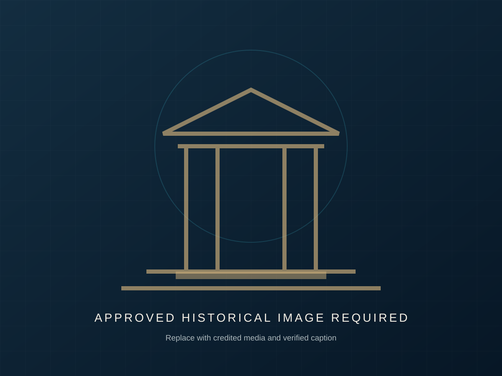
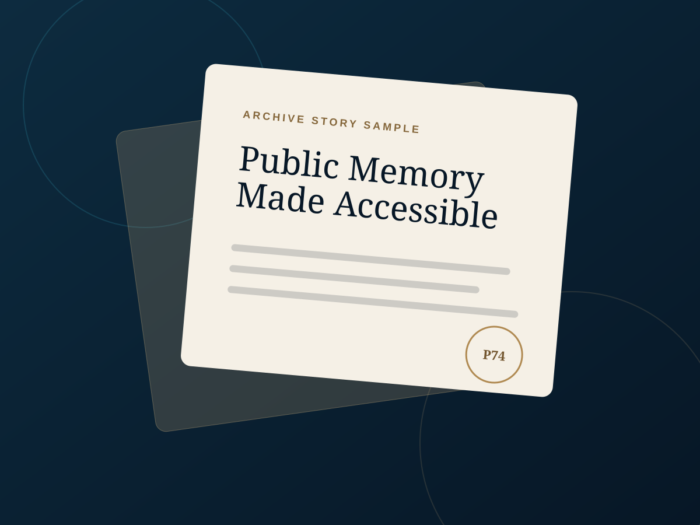

Louisiana civic memory, organized for public access
Preserving the Legacy of Louisiana’s 1974 Constitution
Project74 protects, organizes and shares important civic and historical materials so communities can explore constitutional history, genealogy, civil rights and education in one accessible place.
The legacy that keeps fighting for you.
Current archive entries are labeled samples until official materials are supplied and verified.
Memory becomes public power when it stays accessible.
Our mission
A trusted public home for constitutional memory
Project74 exists to preserve historical materials, explain their civic meaning and make research easier for families, educators, students and communities.
Preserve
Protect documents, stories and contextual records through careful organization and responsible digital presentation.
Educate
Translate complex civic history into clear learning pathways for classrooms, researchers and lifelong learners.
Empower
Connect people with civic knowledge that supports understanding of rights, institutions and community history.
Historical narrative
A constitutional legacy that still matters
Approved historical content requiredPlaceholder narrative for client review: This section will present an accurate, sourced account of the people, debates, civic priorities and long-term significance connected to Louisiana’s 1974 constitutional history.
The final copy should use materials approved by Project74 and reviewed for historical accuracy. It may discuss the convention process, public participation, legal structures, civil rights considerations and continuing relevance.
“This quotation area is reserved for an approved excerpt, oral history or curator statement.”Source to be verified and suppliedContinue through the sample timeline →

Interactive chronology
Follow the story through time
Every entry below is sample content for interface demonstration. Dates and descriptions must be replaced with verified information.
Public archive explorer
Explore the sample collection
Search and filter demonstrate the intended archive experience. No sample card should be described as an authentic record.
No sample items match
Try another keyword or category.

Featured archive story · Sample
How a public record becomes a shared civic resource
This editorial feature demonstrates how Project74 can combine a verified document, expert context, community memory and accessible interpretation. Replace this excerpt with an approved story and sources.
Read the Full StoryGenealogy & community research
Records can reconnect people, places and generations
Historical records may support family and community research when they are described carefully, sourced responsibly and presented with privacy in mind.
Family Records
Future pathways for locating names, places, dates and relationships in approved public collections.
Community History
Connect individual records to neighborhoods, institutions, civic events and shared memory.
Research Guidance
Explain source evaluation, citations, gaps, privacy and the difference between evidence and inference.
Civil rights & civic protection
Understanding institutions helps communities understand protection
Project74 can connect constitutional history with public education about civic structures, rights and accountability through careful sourcing and respectful interpretation.
This section is intentionally restrained. Final historical statements should be reviewed with qualified contributors and community stakeholders.
Explore Relevant MaterialsEducational resources
Tools for teaching, studying and continuing the research
These sample downloads demonstrate the future resource library. Replace each file with an approved, accessible PDF.
Educator Guide
Lesson goals, source analysis, discussion prompts and classroom activities.
Download Sample ↓Student Resource
An introduction to archives, civic vocabulary and responsible source use.
Download Sample ↓Research Toolkit
Worksheets for citations, archive notes, comparison and open questions.
Download Sample ↓Downloadable Timeline
A future print-friendly overview using only approved dates and sources.
Download Sample ↓Designed for public value
Impact without invented statistics
These are descriptive platform indicators, not numerical claims about collections, visitors or outcomes.
Public access
Clear pathways into civic history.
Organized resources
Consistent categories and contextual notes.
Community education
Resources for families and classrooms.
Mobile-friendly archive
Discovery across screen sizes.
Contribute & connect
Help preserve the story
Project74 welcomes conversations about approved historical materials, research partnerships, educational collaboration and community memory.
This demonstration uses a mailto fallback. Replace the placeholder email in script.js, or connect Formspree later using README instructions.